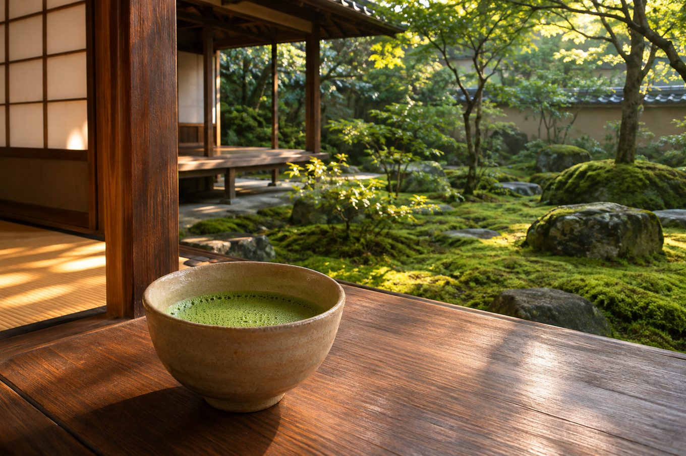

Travel · 6 min read
A Slow Morning in Kyoto

Kyoto's old tea houses open early, before the tour buses arrive.
Order a bowl of matcha, sit by the garden and let the city wake up around you.
Most tea houses close by noon, so try to arrive before nine.
Where to sit
Ask for a seat on the veranda. The garden looks different every season, and the staff are happy to explain what is in bloom.
If you have time, walk to the nearby temple afterwards. The path along the canal stays quiet until about ten.